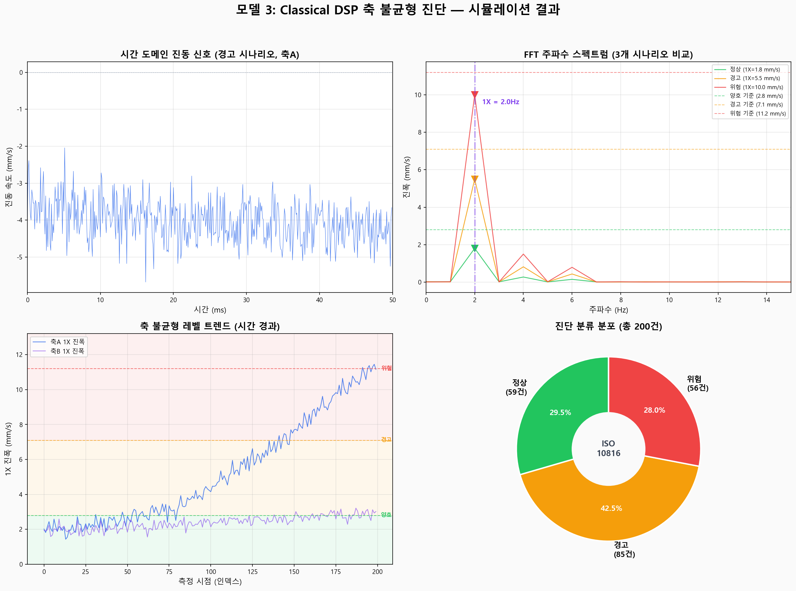

Classical DSP
축 불균형 진단
FFT(Fast Fourier Transform) 기반 1X 회전주파수 분석으로
축 불균형을 실시간 감지하고 ISO 10816 기준에 따라 위험도를 판정합니다.
Classical DSP란?
DSP(Digital Signal Processing, 디지털 신호 처리)는 센서에서 수집한 아날로그 신호를 디지털로 변환한 뒤, 수학적 알고리즘으로 분석하여 유용한 정보를 추출하는 기술입니다. "Classical"이라 함은 딥러닝 등 AI 기법이 아닌, 물리 법칙과 수학적 이론에 기반한 전통적 신호 처리 기법을 의미합니다.
시간에 따른 진동 신호(시간 도메인)를 FFT(고속 푸리에 변환)를 통해 주파수 도메인으로 변환합니다. 주파수 도메인에서는 어떤 주파수의 진동이 얼마나 큰지를 한눈에 파악할 수 있어, 설비 고장의 원인을 정확하게 진단할 수 있습니다.
시간 도메인 vs 주파수 도메인
| 구분 | 시간 도메인 (Time Domain) | 주파수 도메인 (Frequency Domain) |
|---|---|---|
| 표현 | 시간에 따른 진동 크기 변화 | 주파수별 진동 에너지 분포 |
| X축 | 시간 (초, ms) | 주파수 (Hz) |
| Y축 | 진폭 (mm/s, g) | 진폭 (mm/s) |
| 용도 | 전체 진동 크기 확인 | 고장 원인별 주파수 분리 |
| 변환 방법 | — | FFT (Fast Fourier Transform) |
| 장점 | 직관적, 이해 쉬움 | 고장 원인 분리 가능 |
왜 AI가 아닌 Classical DSP를 사용하는가?
- 축 불균형은 반드시 1X 회전주파수에 에너지가 집중됩니다 — 이것은 뉴턴 역학의 법칙입니다.
- 물리적으로 확실한 관계이므로 AI 학습이 필요 없습니다.
- ISO 10816 국제 표준이 이미 확립되어 있어 별도의 레이블링 작업이 불필요합니다.
- FFT 1회 연산이 1ms 미만으로, 어떤 AI 모델보다 빠릅니다.
물리적 원리 — 축 불균형과 1X 주파수 진동
축 불균형(Shaft Imbalance)이란 회전축의 질량 중심이 회전 중심에서 벗어난 상태를 말합니다. 이로 인해 매 회전마다 1번의 원심력이 발생하며, 이것이 1X 회전주파수의 진동으로 나타납니다.
불균형 발생 메커니즘
질량 불균형
칼날 마모/탈락
이물질 부착
원심력 발생
F = m × r × ω²
무거운 쪽으로 힘 작용
주기적 진동
매 회전 1번 진동
→ 1X 주파수 성분
FFT로 검출
1X 진폭 측정
→ 불균형 정량화
ISO 판정
정상/경고/위험
자동 분류
원심력과 진동의 관계
- 칼날 마모 불균일: 한쪽 칼날이 더 많이 마모되면 질량 차이 발생
- 칼날 파손/탈락: 칼날 1개 탈락 시 심한 불균형 즉시 발생
- 이물질 부착: 파쇄물이 축에 부착되어 편심 질량 증가
- 베어링 마모: 베어링 간극 증가로 축이 편심 회전
고조파 분석으로 원인 분류
| 고조파 패턴 | 원인 | 물리적 설명 | 조치 |
|---|---|---|---|
| 1X만 높음 | 질량 불균형 | 편심 질량이 매 회전 1번 원심력 발생 | 밸런싱 또는 이물질 제거 |
| 1X + 2X | 미스얼라인먼트 | 축 정렬 불량으로 2X 성분 추가 발생 | 축 재정렬 |
| 2X만 높음 | 루스니스 (볼트 풀림) | 체결 불량으로 2X 진동 발생 | 볼트 체결 점검 |
| 3X~5X 높음 | 칼날 손상/균열 | 칼날 결함이 고차 진동 유발 | 칼날 교체 |
| 비동기 주파수 | 베어링 결함 | 베어링 고유 결함 주파수 (BPFO/BPFI) | 모델 1 연계 진단 |
FFT 변환 과정 — 시간 도메인에서 주파수 도메인으로
FFT(Fast Fourier Transform)는 이산 푸리에 변환(DFT)을 효율적으로 계산하는 알고리즘입니다. 시간 도메인의 복잡한 진동 신호를 주파수 도메인으로 변환하여, 각 주파수 성분의 진폭과 위상을 분리해냅니다.
FFT 처리 파이프라인
신호 수집
VIB-A/B 센서
10kHz 샘플링
1초 = 10,000 samples
윈도우 함수
Hanning Window
스펙트럼 누설
(Leakage) 방지
FFT 연산
N=10,000점 FFT
O(N log N) 연산
< 1ms 소요
스펙트럼 생성
주파수 vs 진폭
해상도: 1Hz
(= fs/N)
1X 성분 추출
RPM/60 Hz 근방
±0.5Hz 탐색
최대 진폭 추출
FFT 수학적 원리
핵심 파라미터
| 파라미터 | 값 | 의미 |
|---|---|---|
| 샘플링 주파수 (fs) | 10,000 Hz | 1초에 10,000번 측정, 나이퀴스트 주파수 = 5,000 Hz |
| 샘플 수 (N) | 10,000 | 1초 윈도우 × 10kHz 샘플링 |
| 주파수 해상도 (Δf) | 1.0 Hz | fs / N = 10,000 / 10,000 = 1.0 Hz |
| 분석 범위 | 0 ~ 5,000 Hz | fs / 2 (나이퀴스트 한계) |
| 1X 주파수 (축A) | 2.0 Hz | 120 RPM / 60 = 2.0 Hz |
| 1X 주파수 (축B) | 1.33 Hz | 80 RPM / 60 ≈ 1.33 Hz |
Python 구현 코드
1X 성분 추출 — ISO 10816 표준
FFT 스펙트럼에서 1X 회전주파수 위치의 진폭을 추출하면, 이 값이 곧 축 불균형의 정량적 지표입니다. 이 값을 국제 표준 ISO 10816에 대입하여 설비 상태를 판정합니다.
ISO 10816 (Mechanical vibration — Evaluation of machine vibration)은 회전 기계의 진동 심각도를 평가하는 국제 표준입니다. 기계 크기와 설치 조건에 따라 Group 1~4로 분류하며, 각 그룹별로 진동 허용 기준(mm/s RMS)을 규정합니다.
슈레더 적용 그룹: Group 3
| 분류 | 설명 | 출력 범위 | 설치 조건 |
|---|---|---|---|
| Group 1 | 소형 기계 | < 15 kW | - |
| Group 2 | 중형 기계 | 15~75 kW | 유연 기초 |
| Group 3 | 대형 기계 (슈레더) | 15~300 kW | 고정 기초 |
| Group 4 | 터보 기계 | > 300 kW | 유연 기초 |
1X 성분 추출 과정
RPM 읽기
SPD-A: 120 RPM
SPD-B: 80 RPM
1X 계산
f_1X = RPM/60
축A: 2.0 Hz
축B: 1.33 Hz
FFT 수행
1초 윈도우
10,000점 FFT
피크 탐색
f_1X ± 0.5Hz
최대 진폭 추출
ISO 판정
mm/s RMS 비교
등급 결정
1X 비율 검증
1X 진폭이 전체 RMS의 50% 이상을 차지하면 축 불균형이 확실합니다. 50% 미만이면 다른 원인(베어링 결함, 루스니스 등)일 가능성이 있으므로 고조파 분석을 추가 수행합니다.
- 1X 비율 = 1X 진폭 / 전체 RMS
- > 50%: 축 불균형 확진
- 30~50%: 불균형 의심, 추가 분석 필요
- < 30%: 다른 원인 가능성 높음
진단 기준 — Normal / Warning / Danger
ISO 10816-3 Group 3 기준에 따라, 1X 진폭(mm/s RMS)을 아래 기준으로 분류합니다.
정상 운전 가능
모니터링 계속
밸런싱 정비 계획 수립
추세 감시 강화
즉시 밸런싱 실시
>11.2: 즉시 정지
상세 판정 기준표
| 등급 | 1X 진폭 (mm/s) | 상태 | 권고 조치 | 잔여 시간 |
|---|---|---|---|---|
| A (양호) | ≤ 2.8 | 정상 운전 | 정기 모니터링 | 충분 |
| B (경고) | 2.8 ~ 7.1 | 장기 운전 불가 | 밸런싱 정비 계획 수립 | 수일~수주 |
| C (위험) | 7.1 ~ 11.2 | 손상 위험 | 가능한 빨리 밸런싱 실시 | 수시간~수일 |
| D (즉시 정지) | > 11.2 | 심각한 손상 | 즉시 운전 중지 후 점검 | 즉시 |
ISO 10816은 일반 회전기계 기준이며, 슈레더는 충격성 진동이 크므로 실제 적용 시 아래 보정이 필요합니다:
- 초기 기준선(Baseline) 측정: 정상 운전 7일간 데이터로 자체 기준값 설정
- 윈도우 평균: 1초 단위가 아닌 5~10초 이동평균으로 안정성 확보
- 칼날 교체 후: 1~2시간 안정화 기간 동안 경고 무시
시뮬레이션 결과 분석
simulation.py를 실행하면 3가지 시나리오(정상/경고/위험)에 대한 진동 신호를 생성하고,
FFT 분석으로 1X 성분을 추출하여 ISO 10816 기준에 따라 판정합니다.
1X 진폭 (mm/s)
1X 진폭 (mm/s)
1X 진폭 (mm/s)
(10,000점 기준)
결과 이미지

패널별 해석
- 경고 시나리오의 축A 진동 신호를 처음 50ms 구간에서 표시
- 빨간 점선: 1X 주기(= 500ms, f1X = 2.0Hz) 표시
- 매 회전 주기마다 반복되는 진동 패턴이 관찰됨
- 시간 도메인만으로는 불균형 여부 판단이 어려움 → FFT 필요
- 3가지 시나리오의 FFT 결과를 0~15Hz 범위에서 비교
- 보라색 수직선: 1X = 2.0Hz 위치 표시
- 각 시나리오별 1X 피크 높이가 명확히 다름
- ISO 기준선(양호 2.8, 경고 7.1, 위험 11.2)이 수평 점선으로 표시
- 위험 시나리오의 1X 피크가 경고 기준선을 크게 초과
- 시간 경과에 따른 축A/B의 1X 진폭 변화
- 축A (파란선): 초기 정상 → 점진 증가 → 경고/위험 진입 패턴
- 축B (보라선): 비교적 안정적 (정상 범위 유지)
- 배경색: 녹색(양호) / 노란색(경고) / 빨간색(위험) 구간 표시
- 이러한 트렌드 감시로 사전 정비 시점을 예측할 수 있음
- 전체 측정 데이터의 정상/경고/위험 분포 비율
- 중앙에 "ISO 10816" 표시로 판정 기준 명시
- 도넛 차트 형태로 각 등급의 비율을 직관적으로 파악
알고리즘 특징 / 장점 / 단점
핵심 특징
기반한 결정론적 진단
즉시 적용 가능
완전 설명 가능
객관적 판정
| 특징 | 설명 |
|---|---|
| 결정론적(Deterministic) | 같은 입력에 대해 항상 같은 결과. 확률적 변동 없음 |
| 물리 법칙 기반 | 불균형 → 1X 진동은 뉴턴 역학으로 보장되는 관계 |
| 학습 데이터 불필요 | 7일간 기준선(Baseline) 측정만으로 운영 가능 |
| 계산 단순 | FFT 1회 = O(N log N), 10,000점에 1ms 미만 |
| ISO 표준 준거 | ISO 10816-3 기반 — 감사/인증에 유리 |
장점 vs 단점
장점 (Advantages)
- 극도의 속도: < 1ms 추론 시간 — 모든 AI 모델보다 빠름
- 높은 정확도: 불균형 진단에서 98% 이상 정확도
- 완전한 이론적 근거: 수십 년간 검증된 진동 이론
- 라벨 데이터 불필요: 고장 사례 수집 없이 즉시 적용 가능
- 경량 구현: NumPy/SciPy만으로 구현, GPU 불필요
- 100% 설명 가능: "1X가 5mm/s" = "불균형 있음" — 블랙박스 아님
- Edge 배포 용이: 모델 변환(ONNX, TFLite) 불필요, 직접 실행
단점 (Limitations)
- 단일 고장 유형: 축 불균형만 진단 가능 — 베어링, 기어 등은 별도 모델 필요
- 깨끗한 신호 필요: 과도한 충격 노이즈 환경에서 정확도 저하
- 고정 임계값: ISO 기준은 일반 기계 기준, 슈레더에 맞게 보정 필요
- RPM 변동에 민감: 부하 변동 시 1X 주파수가 변하여 추적 필요
- 복합 고장 한계: 여러 고장이 동시 발생하면 분리 어려움
- 미세 결함 감지 한계: 초기 미세 불균형은 노이즈에 묻힐 수 있음
- 적응적 학습 없음: 환경 변화에 자동 적응하지 못함
다른 모델과의 비교
| 항목 | 모델 3: Classical DSP | 모델 1: LSTM Autoencoder | 모델 2: Gradient Boosting |
|---|---|---|---|
| 알고리즘 유형 | 물리 기반 DSP | 딥러닝 (비지도) | 앙상블 (지도학습) |
| 학습 데이터 | 불필요 | 정상 데이터만 | 정상+고장 라벨 필요 |
| 추론 시간 | < 1ms | < 10ms | < 5ms |
| 진단 대상 | 축 불균형 (단일) | 베어링 이상 (다양) | 칼날 마모 (연속) |
| 설명 가능성 | 100% 설명 가능 | 이상 점수만 제공 | Feature Importance |
| 적응성 | 고정 기준 | 자동 적응 | 재학습 필요 |
슈레더 적용 시나리오
폐배터리 이축 슈레더에 Classical DSP 축 불균형 진단을 적용한 구체적 시나리오입니다.
센서 구성
| 센서 | 위치 | 사양 | 역할 |
|---|---|---|---|
| VIB-A | 축A 베어링 하우징 | 3축 가속도계, 0~50g, 10kHz | 축A 진동 데이터 수집 |
| VIB-B | 축B 베어링 하우징 | 3축 가속도계, 0~50g, 10kHz | 축B 진동 데이터 수집 |
| SPD-A | 축A 엔코더 | 0~200 RPM, 10Hz | 축A 회전속도 (1X 계산용) |
| SPD-B | 축B 엔코더 | 0~150 RPM, 10Hz | 축B 회전속도 (1X 계산용) |
실시간 처리 플로우
센서 수집
VIB-A/B: 10kHz
SPD-A/B: 10Hz
1초 버퍼
FFT 분석
10,000점 FFT
1X 성분 추출
< 1ms
ISO 판정
정상/경고/위험
분류 결정
연계 분석
모델10 앙상블
통합 건강 점수
조치
알람/정비 권고
비상 정지
운영 시나리오
- 축A 1X 진폭: 1.5~2.5 mm/s (양호 범위)
- 축B 1X 진폭: 1.2~2.0 mm/s (양호 범위)
- 매 1초마다 FFT 분석 수행, 트렌드 기록
- 대시보드에 녹색 표시, 정상 운전 계속
- 칼날 마모가 진행되면서 축A 1X 진폭이 서서히 증가
- 3.0 mm/s 초과 시 "경고" 판정 → 운영자에게 알림
- 추세 분석: 주당 0.5 mm/s 증가 → 2주 후 "위험" 예상
- 권고: "다음 주말 정기 정비 시 밸런싱 실시"
- 칼날 1개 파손/탈락 시 1X 진폭이 급격히 상승 (2 → 12+ mm/s)
- "즉시 정지" 판정 → 자동 비상 정지 + 운영자 긴급 알림
- 원인 분류: "1X만 급등" → "질량 불균형 (칼날 탈락 의심)"
- 조치: 설비 정지 후 칼날 상태 확인 및 교체
모델 간 연계
| 연계 모델 | 연계 방식 | 시너지 효과 |
|---|---|---|
| 모델 1 (베어링 이상) | 비동기 주파수 감지 시 모델 1에 연계 | 불균형 vs 베어링 고장 구분 |
| 모델 2 (칼날 마모) | 불균형 원인이 칼날 마모인 경우 RUL 예측 | 정비 시기 정밀 예측 |
| 모델 4 (이물질 끼임) | 급격한 불균형 시 이물질 끼임 동시 확인 | 고장 원인 복합 분석 |
| 모델 10 (통합 분석) | 1X 진폭을 통합 건강 점수에 반영 | 설비 전체 상태 종합 판단 |
기대 효과
정확도
추론 시간
여유 시간
감소 목표
Classical DSP는 AI 모델이 아니므로 모델 변환(ONNX, TFLite 등)이 불필요합니다. NumPy와 SciPy만 설치되어 있으면 Edge PC에서 직접 실행 가능하며, Docker 컨테이너 크기도 AI 모델 대비 1/10 수준으로 경량입니다.